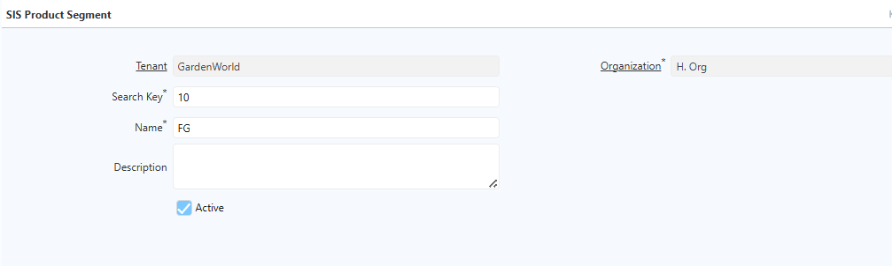
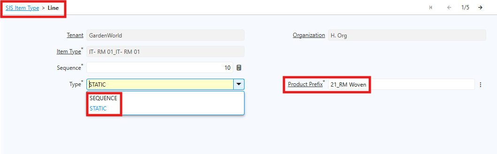

Product Segment
Product Segment adalah kode identifikasi produk yang otomatis digunakan pada setiap produk baru di sistem iDempiere. Kode ini biasanya terdiri dari 2–3 karakter dan dikombinasikan dengan nomor urut produk.
Contoh Product Segment
| Kode Segment | Keterangan |
|---|---|
| 10 | Barang Jadi Kemeja |
| 20 | Bahan Baku Knitting |
| 21 | Bahan Baku Woven |
Tanpa Product Segment, sistem hanya menghasilkan nomor urut seperti 0001 atau 0002 yang tidak memberikan informasi mengenai jenis produk. Dengan Product Segment, user dapat langsung mengenali kategori produk hanya dari kode artikel yang ditampilkan.
Manfaat Product Segment
- Mempermudah Identifikasi Produk. Saat jumlah produk mencapai ratusan atau ribuan item, Product Segment membantu user mengenali produk dengan cepat. User cukup melihat awalan kode untuk mengetahui apakah produk tersebut bahan baku, barang setengah jadi, atau barang jadi.
- Menghindari Duplikasi Kode Antar Kategori. Tanpa adanya segment, produk dari kategori berbeda dapat memiliki nomor urut yang sama, misalnya 0001 untuk bahan baku dan 0001 untuk barang jadi. Dengan segment, setiap kode menjadi unik, seperti: RM-0001 dan FG-0001. Kedua kode tersebut berbeda dan tidak saling bertabrakan
- Mendukung Konsistensi Data. Segment yang ditentukan sejak awal implementasi membantu seluruh tim menggunakan pola penamaan yang sama. Dengan begitu, proses pencarian data dan pembuatan laporan menjadi lebih terstruktur dan konsisten.
Dalam satu segment, sistem dapat menampung beberapa tipe sekaligus. Jika perusahaan membutuhkan pengelompokan segment berdasarkan kategori tertentu, seperti jenis artikel bahan jadi, bahan baku, gramasi, benang, brand, dan kategori lainnya, lakukan pengaturan pada Menu Product Segment Type.
Sistem akan mengelompokkan kode artikel sesuai kategori yang ditentukan sehingga penyusunan kode artikel menjadi lebih rapi, konsisten, dan mudah dikelola.
Langkah Pengaturan Product Segment Type
- Buka menu SIS Product Segment Type
- Klik New
- Isi Field Search Key dan Name
 4. Klik Save
4. Klik Save
Setelah pengelompokan segment berdasarkan kategori selesai dilakukan, lanjutkan konfigurasi pada menu Product Segment.
Langkah Pengaturan Product Segment di Sistem
- Buka Menu SIS Product Segment
- Klik New
- Isi field Search Key dan Name. Contoh 10 untuk Barang Jadi dan 59 untuk Brand Polo

- Klik Save
Setelah Product Segment selesai dikonfigurasi, langkah berikutnya adalah mengatur Item Type. Item Type berfungsi untuk menyusun kode artikel berdasarkan segment yang sudah dibuat.
Item Type Product
Item Type adalah konfigurasi penyusun kode artikel berdasarkan Product Segment yang telah dibuat sebelumnya.
Sistem akan membentuk kode artikel secara otomatis berdasarkan urutan segment pada Item Type.
Contoh Kode Artikel:
| Kode Artikel | Keterangan |
|---|---|
| 1015015971761200 | Barang Jadi Polo |
| 2192G2620000527S6000 | Bahan Baku Woven |
| 20010TR91200660ZP091 | Bahan Baku Knitting |

Konfigurasi Item Type
Langkah-Langkah Konfigurasi Item Type:
- Buka Menu SIS Item Type
- Klik New
- Isi field Search Key dan Name sesuai kebutuhan operasional
 4. Masuk ke Item Type Line. Pada bagian Item Type Line, terdapat dua jenis konfigurasi segment, yaitu Sequence (nomor urut otomatis) dan Static (Kode tetap artikel), contoh: 59 untuk Brand Polo, 28 untuk MClass Kemeja). Penggunaan Sequence bersifat opsional dan disesuaikan dengan kebutuhan perusahaan.
4. Masuk ke Item Type Line. Pada bagian Item Type Line, terdapat dua jenis konfigurasi segment, yaitu Sequence (nomor urut otomatis) dan Static (Kode tetap artikel), contoh: 59 untuk Brand Polo, 28 untuk MClass Kemeja). Penggunaan Sequence bersifat opsional dan disesuaikan dengan kebutuhan perusahaan.

5. Klik SaveUrutan segment pada Item Type mengikuti standar kode perusahaan karena urutan tersebut menentukan hasil akhir kode artikel.
Setelah Item Type selesai dikonfigurasi, user dapat membuat artikel atau produk baru dengan menghubungkan segment yang telah diatur sebelumnya. Sistem kemudian akan menghasilkan kode artikel secara otomatis.
Implementasi Item Type di Product
Setelah konfigurasi Item Type selesai, langkah berikutnya adalah membuat produk menggunakan segment yang sudah ditentukan.
Langkah Pembuatan Produk dengan Segment
- Buka Menu Product
 Pada field Product Type, pilih SIS Template. Setelah itu, field Item Type akan muncul. Pilih Item Type sesuai konfigurasi sebelumnya.
2. Klik Save. Saat produk disimpan, sistem otomatis membuat Kode artikel dan Nama produk. Di sistem, kode artikel disebut sebagai Search Key.
Pada field Product Type, pilih SIS Template. Setelah itu, field Item Type akan muncul. Pilih Item Type sesuai konfigurasi sebelumnya.
2. Klik Save. Saat produk disimpan, sistem otomatis membuat Kode artikel dan Nama produk. Di sistem, kode artikel disebut sebagai Search Key.
Apabila produk memiliki varian, user dapat mengatur varian tersebut pada menu Variant Attribute.

Setelah Variant Attribute selesai dikonfigurasi, user dapat menjalankan proses Generate Product Variant. Sistem akan otomatis membentuk kode artikel berdasarkan template Item Type yang telah dikonfigurasi, kemudian menambahkan kode varian sesuai atribut produk.